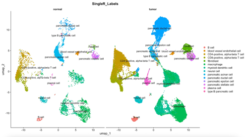
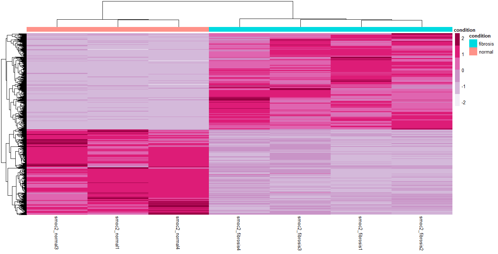
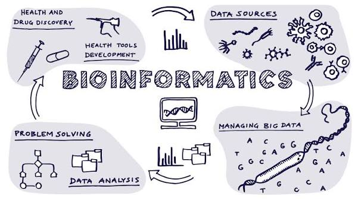

<nourine.sabry/>
Teaching Assistant at Nile University. I am a bioinformatician working across high-throughput data analysis, network biology, and computer-aided drug discovery.
I'm a bioinformatician and Teaching Assistant at Nile University, where I teach courses such as omics data analysis, computer-aided drug discovery, & network biology. I graduated summa cum laude with a B.Sc. in Biotechnology, specializing in Bioinformatics, from Nile University in 2025.
My work sits at the intersection of biology & data analysis. I like projects that make me extract actionable biological insight from high-throughput data.
Nile University
Biotechnology Research & Innovation Centre (BRIC), Nile University
57357 Children's Cancer Hospital



Instructing the Systems Biology & CADD internship at Nile University's BRIC centre.
Teaching Next-generation sequencing analysis, Systems biology & modelling of biological networks, & Omics-II for the Fall '26 semester at Nile University.
Hosting the African Biogenome Project regional workshop at Nile University.
last updated: September 2026
"Life is so constructed that an event does not, cannot, will not, match the expectation."